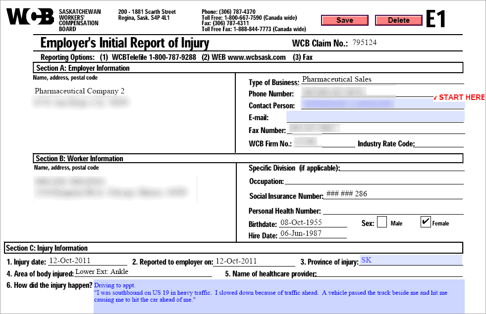
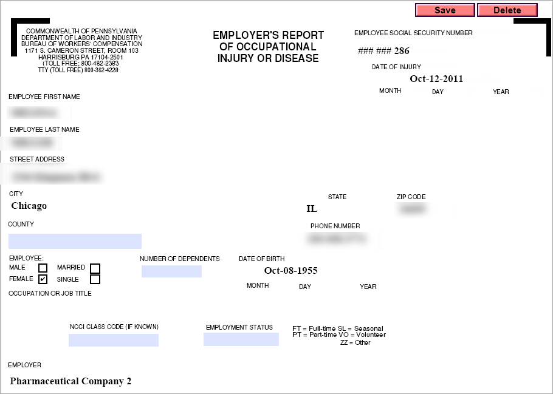

Complete an Employer's First Report of Injury if required by the jurisdiction. This report is produced from information entered in the incident report, such as date and time the injury occurred and was reported, and a description of the injury. Forms used in Canadian provinces, U.S. states, and the UK are stored in Cority. A sample form is included that can be used for other jurisdictions, or a custom report can be created in the PDFForm look-up table.
Any change on forms or reports does not update the employee demographics, and changes made to the incident form will not update the employer’s report once it has been generated, so be sure the incident form is accurate before you create the Employer’s Report.
Open the Injuries/Illnesses tab of an incident report and select the injury/illness you are reporting on.
On the Forms tab, select the link for the Employers Report (it may be named differently depending on the jurisdiction).


The form displays the employee’s information as entered in the Incident Report. Enter any new information needed. If the form has multiple pages, navigation buttons are available at the bottom of the form to help you to move between pages.
When the Firm ID is entered in the Incident Report, the ID and associated information as entered in the FirmCode look-up table is transferred to the employer’s report form.
When the information is complete, use the toolbar option to print a copy of the report, or click Save to save the report and return to the previous screen.
To email the report, choose Actions»Email Employers Report.
For Ontario jurisdictions:
All fields populated by Cority data are editable. Fields that record work hours accommodate up to three decimal places when the value is entered manually.
You may see a Submit button that allows you to submit the form electronically. Your company must be registered with the WSIB to use their eservice, and you must advise Cority Inc. of your WSIB login credentials. If you submit electronically, the date last submitted is displayed on the forms list.